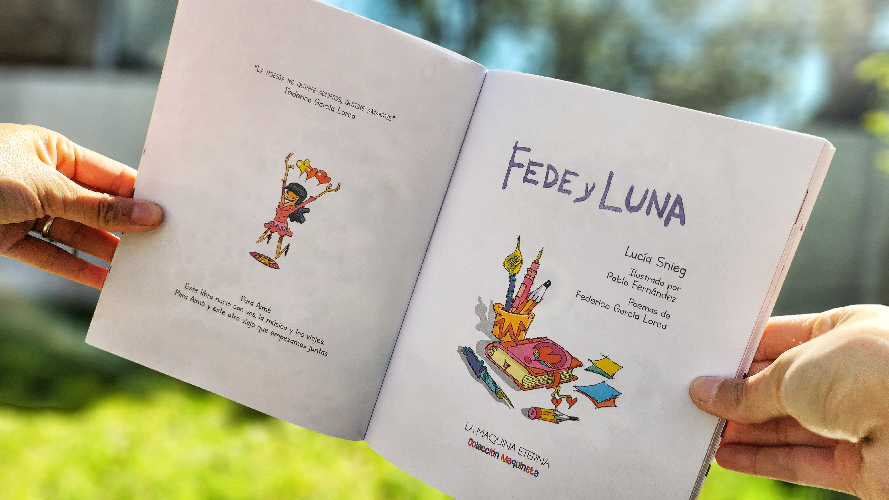
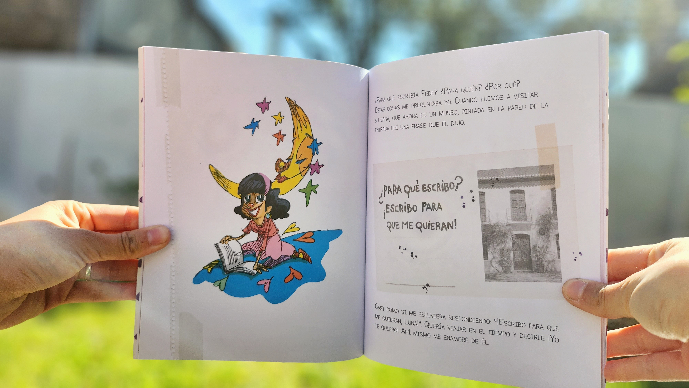
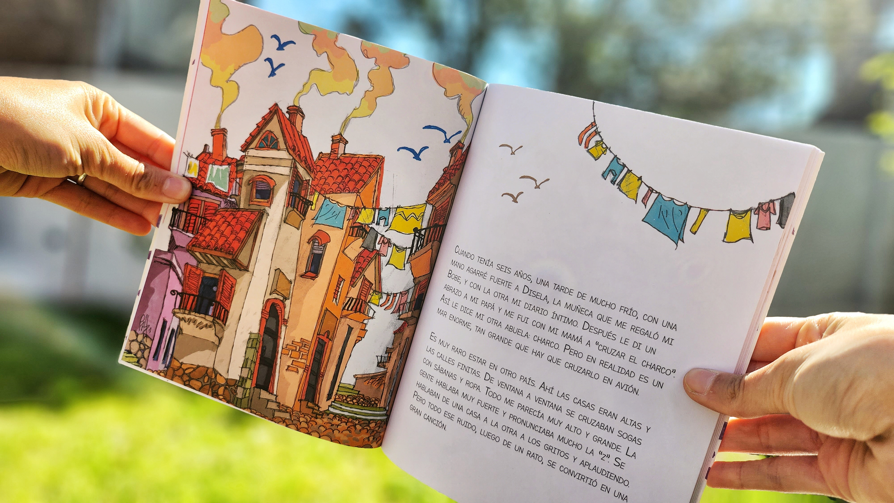
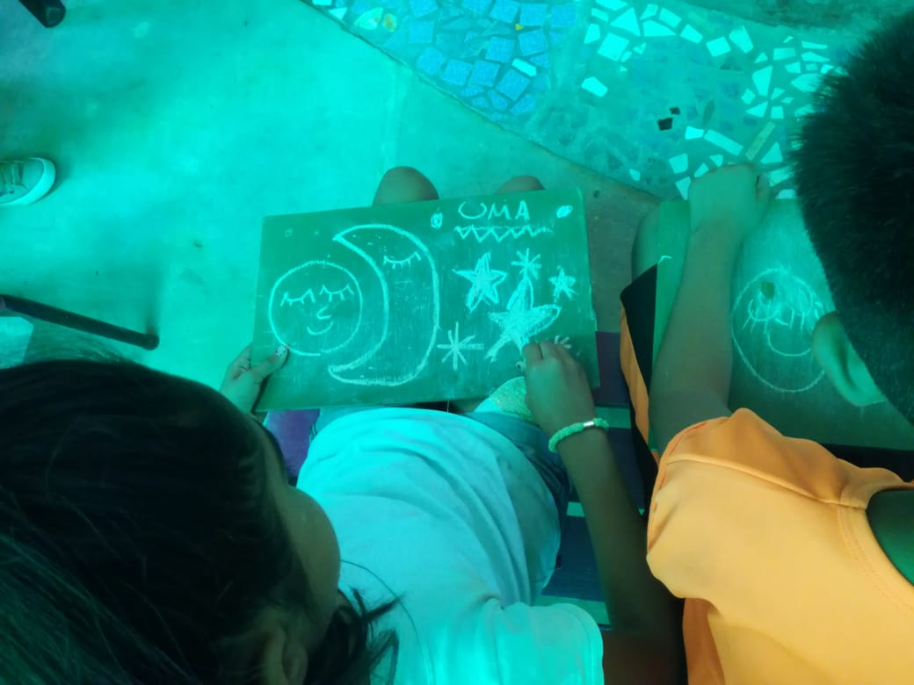
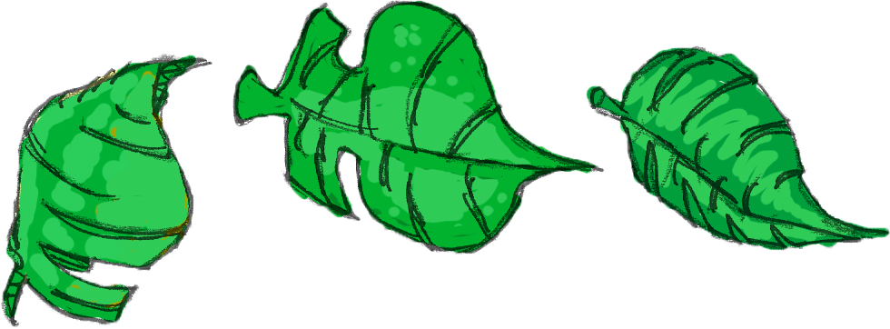
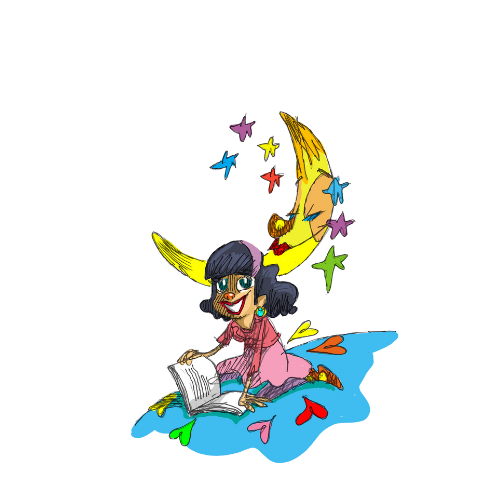

El Libro
El libro FEDE Y LUNA. Un viaje entre poesías y canciones, agrupa una dramaturgia para unipersonal, dibujos originales, música incrustada por código QR...
Ideado para todo público, compila poemas y romances de Federico García Lorca que la actriz-música, Lucía Snieg, ha musicalizado...
A partir del diario de viaje de la protagonista... Argentina ardía y España podría convertirse en su próxima casa...
Fede aparece en la ilustración en vivo de Pablo Fernández... La dirección de Claudia Quiroga orientó el montaje hacia una experiencia plurisensorial.
Ficha Técnica
- Autora: Lucía Snieg
- Corrección: Bruno Vicino
- Ilustraciones: Pablo Fernández
- Editorial: La máquina eterna
- Diseño de interior: Mercedes Idoyaga y Viviana Bilotti
- Diseño de tapa: Viviana Bilotti
- Ilustración de tapa: Pablo Fernández
- Impresión: Pinter Gráfica



Música
Fede y Luna (Ficha técnica del Disco)
- Lucía Snieg: composiciones, voz y coros
- Federico García Lorca: letras y poemas
- Lautaro Fernández: guitarras, charango, tiple y ukelele
- Leonel Vivas: percusión
- Misael Hilal: Batería
- Mailén Elvira: Piano
- Pablo Brie: producción y mezcla
- Martín Solimo: Masterización
Grabado y mezclado en estudio “El Cóndor” durante 2022.
Funciones
El espectáculo FEDE Y LUNA fue estrenado en la Feria del Libro Infantil Tecnópolis 2019...
Ficha Técnica:
Grupo SHUNYA | Actuación: Lucia Snieg | Ilustración: Pablo Fernández
Historias y Momentos
Galería de Fotos





Contacto
Contrataciones: lulisnieg@gmail.com
Editorial: lamaquinaeterna@gmail.com
WhatsApp: 11 5052-8203

